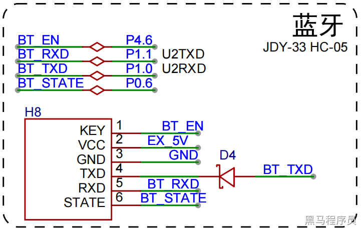
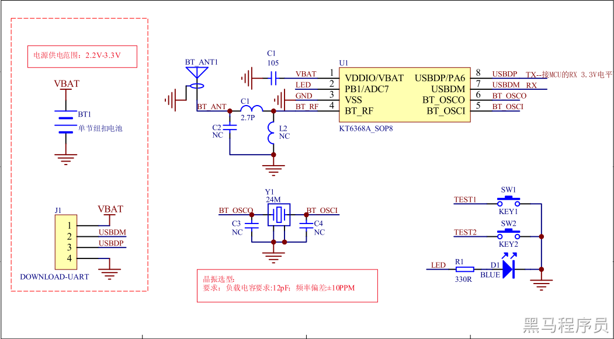
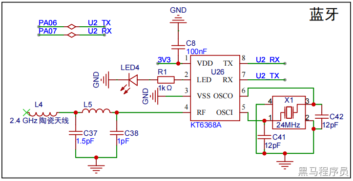
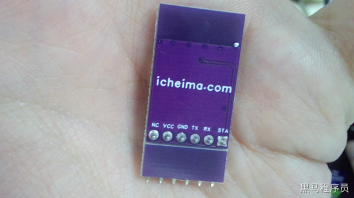

<!DOCTYPE lake>
<h1 data-lake-id="GyC4M" id="GyC4M"><span data-lake-id="u0689351e" id="u0689351e">KT6368A</span></h1><p data-lake-id="u354ecd9e" id="u354ecd9e"><span data-lake-id="uc12cc749" id="uc12cc749">KT6368A蓝牙透传模块是一款支持蓝牙5.1版本BLE及2.1版本的SPP功能的双模纯数据芯片。芯片的亮点在超小尺寸，超级优惠价格。以及简单明了的透传和串口AT控制功能。大大降低了嵌入蓝牙在其它产品的开发难度和成本。KT6368A支持连接手机，进行数据的双向交互，俗称“蓝牙透传”。通过UART接口，支持常用的AT指令，如：设置名称、设置地址、设置波特率等等</span></p><p data-lake-id="u53cd6835" id="u53cd6835"><span data-lake-id="u08288dcc" id="u08288dcc">同时支持SPP和BLE 。但是只能任选其中一个协议使用。这款芯片最大的特点，就是便宜，使用简单，生产简单。无其他，便宜才是王道。</span></p><p data-lake-id="u0776fccc" id="u0776fccc"><span data-lake-id="u96d89bd8" id="u96d89bd8">请注意，一旦蓝牙被连接之后，芯片自动进入透传模式。不再识别AT指令。所以AT指令只能用于未连接状态下使用 。</span></p><p data-lake-id="ue8dcec71" id="ue8dcec71"><span data-lake-id="u54db44cc" id="u54db44cc">​</span><br/></p><p data-lake-id="u34074513" id="u34074513"></p><p data-lake-id="uad5fe20b" id="uad5fe20b"><br/></p><h2 data-lake-id="z66pU" id="z66pU"><span data-lake-id="ube6ebce8" id="ube6ebce8">产品参数</span></h2><ul list="u69e65254"><li data-lake-id="u8bd55f86" fid="u49e3fabc" id="u8bd55f86"><span data-lake-id="u8cd039b1" id="u8cd039b1">建议给3.3V的电压【2.2V-3.4V】</span></li><li data-lake-id="u1fbcd202" fid="u49e3fabc" id="u1fbcd202"><span data-lake-id="ua61385de" id="ua61385de">开机瞬间电流是26mA。稳定大概1秒左右，就降到4mA左右</span></li><li data-lake-id="u54065ccc" fid="u49e3fabc" id="u54065ccc"><span data-lake-id="u5682df7a" id="u5682df7a">芯片的uart的缓存是1K字节，默认波特率是115200</span></li><li data-lake-id="uc1101cc8" fid="u49e3fabc" id="uc1101cc8"><span data-lake-id="uf6935d07" id="uf6935d07">建议是单次最高不超过512字节一包数据</span></li></ul><p data-lake-id="u880510d0" id="u880510d0"></p><p data-lake-id="ub5cd9a35" id="ub5cd9a35"></p><ul list="u9fedf13e"><li data-lake-id="u128e3c9e" fid="udc9ddafa" id="u128e3c9e"><span data-lake-id="u837ef4d4" id="u837ef4d4">NC：不接</span></li><li data-lake-id="u4c05b1fd" fid="udc9ddafa" id="u4c05b1fd"><span data-lake-id="u56134650" id="u56134650">VCC：3.3V</span></li><li data-lake-id="uc0656242" fid="udc9ddafa" id="uc0656242"><span data-lake-id="u2f68fb04" id="u2f68fb04">GND：接地</span></li><li data-lake-id="u6f6a5edb" fid="udc9ddafa" id="u6f6a5edb"><span data-lake-id="u5f2b917a" id="u5f2b917a">TX：数据发送</span></li><li data-lake-id="u8d60df0d" fid="udc9ddafa" id="u8d60df0d"><span data-lake-id="u7f06883d" id="u7f06883d">RX：数据接收</span></li><li data-lake-id="uaf23bd95" fid="udc9ddafa" id="uaf23bd95"><span data-lake-id="u825d971b" id="u825d971b">STA：连接状态state，已连接为1，未连接为0</span></li></ul><a class="yuque-card-link" href="https://www.yuque.com/attachments/yuque/0/2024/pdf/27903758/1724843888981-15325cea-251d-47f3-a930-c1c2ff088808.pdf">localdoc：SCH_KT6368A原理图.pdf</a><h2 data-lake-id="K5WZV" id="K5WZV"><span data-lake-id="u1adbb094" id="u1adbb094">AT指令注意</span></h2><p data-lake-id="ue814e08a" id="ue814e08a"><span data-lake-id="u35d0c395" id="u35d0c395">KT6328A 或者 KT6368A 芯片在第一次上电的时候，系统内部有很多很多的校准操作。这个时间的消耗大概是 2.5 秒 。所以串口发指令必须要上电 3 秒左右才能发指令。但是第二次或者第三次上电，以及以后上电，时间消耗大概是 500ms 。</span></p><p data-lake-id="u3275ec12" id="u3275ec12"><span data-lake-id="u3cf97d09" id="u3cf97d09">所以用户在使用过程中，尤其那种固定上电时间，发 AT 指令修改蓝牙名的操作一定要注意这个发送的时间，不然会导致一些奇怪的问题</span></p><p data-lake-id="u4404ce81" id="u4404ce81"><span data-lake-id="ub9afe89f" id="ub9afe89f">建议芯片</span><strong><span data-lake-id="u0e2a9120" id="u0e2a9120" style="color: #DF2A3F">上电 2.5 秒——3 秒之后</span></strong><span data-lake-id="u00f8095d" id="u00f8095d">去修改蓝牙的参数，比如：蓝牙名、地址、波特率等等需要记忆的参数</span></p><p data-lake-id="u66b8bf3f" id="u66b8bf3f"><span data-lake-id="u7434c768" id="u7434c768">芯片经过烧录器烧完之后，直接出货给客户，客户拿到芯片之后，只要没有通电，那么芯片就没有启动过，称为第一次启动</span></p><p data-lake-id="u1c7c4a33" id="u1c7c4a33"><span data-lake-id="u936125ef" id="u936125ef">​</span><br/></p><blockquote class="lake-alert lake-alert-success" data-lake-id="ubda20049" id="ubda20049"><p data-lake-id="uabd33bcf" id="uabd33bcf"><span data-lake-id="uf2deab02" id="uf2deab02">1、为了保证芯片的稳定性，发指令设置参数，必须是等待</span><strong><span data-lake-id="ua40be5fe" id="ua40be5fe"> 2.5 秒</span></strong><span data-lake-id="u08a7d6dd" id="u08a7d6dd">之后才能发</span></p><p data-lake-id="u44493ab8" id="u44493ab8"><span data-lake-id="u234816a4" id="u234816a4">2、或者等待蓝牙芯片</span><strong><span data-lake-id="u3a803648" id="u3a803648">返回初始化数据</span></strong><span data-lake-id="u61524f5b" id="u61524f5b">之后，才能发 AT 指令设置参数，比如：蓝牙名、地址、波特率等等</span></p></blockquote><p data-lake-id="u0a58bde0" id="u0a58bde0"><br/></p><p data-lake-id="u78529ed4" id="u78529ed4" style="text-align: left"><strong><span data-lake-id="u3a228ce7" id="u3a228ce7">常用AT指令：</span></strong></p><table class="lake-table" col-head="#D9EAFC;#00346B" data-lake-id="dUTIB" id="dUTIB" margin="true" row-head="#D9EAFC;#00346B" style="width: 710px" width-mode="contain"><colgroup><col width="134"/><col width="251"/><col width="325"/></colgroup><tbody><tr data-lake-id="u9002ae55" id="u9002ae55"><td data-lake-id="u0600896e" id="u0600896e" style="vertical-align: middle"><p data-lake-id="uf7323c1d" id="uf7323c1d" style="text-align: center"><span data-lake-id="u5f1991b4" id="u5f1991b4">CMD</span></p></td><td data-lake-id="u0ccb2797" id="u0ccb2797" style="vertical-align: middle"><p data-lake-id="u265ccbc0" id="u265ccbc0" style="text-align: center"><span data-lake-id="u9b910bc3" id="u9b910bc3">功能</span></p></td><td data-lake-id="u5a7ed8d0" id="u5a7ed8d0" style="vertical-align: middle"><p data-lake-id="u6461dd1e" id="u6461dd1e" style="text-align: center"><span data-lake-id="u3e8d42e5" id="u3e8d42e5">举例</span></p></td></tr><tr data-lake-id="u49ed5c2e" id="u49ed5c2e"><td data-lake-id="ub08cca94" id="ub08cca94" style="vertical-align: middle"><p data-lake-id="ue81d118a" id="ue81d118a" style="text-align: center"><span class="lake-fontsize-12" data-lake-id="u7786c908" id="u7786c908" style="color: rgb(0,0,0)">AT+TM</span></p></td><td data-lake-id="uac56d47f" id="uac56d47f" style="vertical-align: middle"><p data-lake-id="ubd459321" id="ubd459321" style="text-align: center"><span class="lake-fontsize-12" data-lake-id="ud2c06210" id="ud2c06210" style="color: rgb(0,0,0)">查询 BLE 蓝牙名称</span></p></td><td data-lake-id="u2c2dfa47" id="u2c2dfa47" style="vertical-align: middle"><p data-lake-id="u2ff2f867" id="u2ff2f867" style="text-align: center"><span class="lake-fontsize-12" data-lake-id="ub7122848" id="ub7122848" style="color: rgb(0,0,0)">返回 </span><code data-lake-id="u4f2efc6c" id="u4f2efc6c"><span class="lake-fontsize-12" data-lake-id="u2841ea99" id="u2841ea99" style="color: rgb(0,0,0)">TM+BLE-1234\r\n</span></code></p><p data-lake-id="u3001da33" id="u3001da33" style="text-align: center"><span class="lake-fontsize-12" data-lake-id="u6757b11b" id="u6757b11b" style="color: rgb(0,0,0)">代表蓝牙名为 BLE-1234</span></p></td></tr><tr data-lake-id="uf535ff0a" id="uf535ff0a"><td data-lake-id="u5ac615fc" id="u5ac615fc" style="vertical-align: middle"><p data-lake-id="uf2f60b43" id="uf2f60b43" style="text-align: center"><span class="lake-fontsize-12" data-lake-id="ua3cd96d0" id="ua3cd96d0" style="color: rgb(0,0,0)">AT+BM </span></p></td><td data-lake-id="u56fc1bd8" id="u56fc1bd8" style="vertical-align: middle"><p data-lake-id="u07207367" id="u07207367" style="text-align: center"><span class="lake-fontsize-12" data-lake-id="u9f068a19" id="u9f068a19" style="color: rgb(0,0,0)">设置 BLE 蓝牙名称</span></p></td><td data-lake-id="u3bf89f54" id="u3bf89f54" style="vertical-align: middle"><p data-lake-id="ue124fb98" id="ue124fb98" style="text-align: center"><span class="lake-fontsize-12" data-lake-id="u5760e610" id="u5760e610" style="color: rgb(0,0,0)">例如</span><code data-lake-id="u3a1a2484" id="u3a1a2484"><span class="lake-fontsize-12" data-lake-id="u5e919a1a" id="u5e919a1a" style="color: rgb(0,0,0)">AT+BMBLE-1234\r\n</span></code></p><p data-lake-id="u875d5869" id="u875d5869" style="text-align: center"><span class="lake-fontsize-12" data-lake-id="u0d466ef2" id="u0d466ef2" style="color: rgb(0,0,0)">设置蓝牙名称为BLE-1234</span></p></td></tr><tr data-lake-id="uc8d6cdc5" id="uc8d6cdc5"><td data-lake-id="u43617b12" id="u43617b12" style="vertical-align: middle"><p data-lake-id="u1ffe410e" id="u1ffe410e" style="text-align: center"><span data-lake-id="u466ad0de" id="u466ad0de">AT+TD</span></p></td><td data-lake-id="u8f92126e" id="u8f92126e" style="vertical-align: middle"><p data-lake-id="ud40f5904" id="ud40f5904" style="text-align: center"><span class="lake-fontsize-12" data-lake-id="u328bc003" id="u328bc003" style="color: rgb(0,0,0)">查看SPP蓝牙名称</span></p></td><td data-lake-id="u314b70b6" id="u314b70b6" style="vertical-align: middle"><p data-lake-id="u59a21e37" id="u59a21e37" style="text-align: center"><span class="lake-fontsize-12" data-lake-id="uc75056a2" id="uc75056a2" style="color: rgb(0,0,0)">返回 </span><code data-lake-id="u77711109" id="u77711109"><span class="lake-fontsize-12" data-lake-id="ud4fe37c3" id="ud4fe37c3" style="color: rgb(0,0,0)">TD+SPP1234\r\n</span></code><span class="lake-fontsize-12" data-lake-id="u3dc3179b" id="u3dc3179b" style="color: rgb(0,0,0)"> </span></p><p data-lake-id="ud45ef531" id="ud45ef531" style="text-align: center"><span class="lake-fontsize-12" data-lake-id="ud0713a7d" id="ud0713a7d" style="color: rgb(0,0,0)">代表蓝牙名为 SPP1234</span></p></td></tr><tr data-lake-id="u0369d632" id="u0369d632"><td data-lake-id="u626596fe" id="u626596fe" style="vertical-align: middle"><p data-lake-id="u2f5a1619" id="u2f5a1619" style="text-align: center"><span data-lake-id="u3ea91135" id="u3ea91135">AT+BD</span></p></td><td data-lake-id="ue0832ab2" id="ue0832ab2" style="vertical-align: middle"><p data-lake-id="u984ce65f" id="u984ce65f" style="text-align: center"><span class="lake-fontsize-12" data-lake-id="u069c9414" id="u069c9414" style="color: rgb(0,0,0)">设置SPP蓝牙名称</span></p></td><td data-lake-id="u70c98a92" id="u70c98a92" style="vertical-align: middle"><p data-lake-id="u28d1793b" id="u28d1793b" style="text-align: center"><span class="lake-fontsize-12" data-lake-id="u0e38e43d" id="u0e38e43d" style="color: rgb(0,0,0)">例如</span><code data-lake-id="u06c995e3" id="u06c995e3"><span class="lake-fontsize-12" data-lake-id="u7b3bd9ee" id="u7b3bd9ee" style="color: rgb(0,0,0)">AT+BDSPP-1234\r\n</span></code></p><p data-lake-id="u6ef33457" id="u6ef33457" style="text-align: center"><span class="lake-fontsize-12" data-lake-id="u6b1f33bf" id="u6b1f33bf" style="color: rgb(0,0,0)">设置蓝牙名称为SPP-1234</span></p></td></tr><tr data-lake-id="u48e35e6f" id="u48e35e6f"><td data-lake-id="u9d7adb34" id="u9d7adb34" style="vertical-align: middle"><p data-lake-id="uf4141aaa" id="uf4141aaa" style="text-align: center"><span data-lake-id="uef838fcf" id="uef838fcf">AT+TN</span></p></td><td data-lake-id="uc71706cc" id="uc71706cc" style="vertical-align: middle"><p data-lake-id="uaf04cb05" id="uaf04cb05" style="text-align: center"><span class="lake-fontsize-12" data-lake-id="ubb3d1e74" id="ubb3d1e74" style="color: rgb(0,0,0)">查看蓝牙Mac地址</span></p></td><td data-lake-id="u2b57ff0d" id="u2b57ff0d" style="vertical-align: middle"><p data-lake-id="ub1849f46" id="ub1849f46" style="text-align: center"><span class="lake-fontsize-12" data-lake-id="u13d00a14" id="u13d00a14" style="color: rgb(0,0,0)">返回 </span><code data-lake-id="ub6305255" id="ub6305255"><strong><span class="lake-fontsize-12" data-lake-id="ud7cbca24" id="ud7cbca24" style="color: rgb(255,0,0)">TB+</span></strong><span class="lake-fontsize-12" data-lake-id="ufd1e5b2e" id="ufd1e5b2e" style="color: rgb(0,0,0)">12345678AABB\r\n</span></code><span class="lake-fontsize-12" data-lake-id="uf5bc542e" id="uf5bc542e" style="color: rgb(0,0,0)"> </span></p><p data-lake-id="u1f76d5ba" id="u1f76d5ba" style="padding-left: 4em"><span class="lake-fontsize-12" data-lake-id="u757be1c7" id="u757be1c7" style="color: rgb(0,0,0)">表示BLE 的蓝牙地址：</span></p><p data-lake-id="ub26d8341" id="ub26d8341"><span class="lake-fontsize-12" data-lake-id="u0311063d" id="u0311063d" style="color: rgb(0,0,0)">0xBB、0xAA、0x78、0x56、0x34、0x12</span></p></td></tr><tr data-lake-id="u1bb8aec8" id="u1bb8aec8"><td data-lake-id="ucba46dd2" id="ucba46dd2" style="vertical-align: middle"><p data-lake-id="u44840e1b" id="u44840e1b" style="text-align: center"><span class="lake-fontsize-12" data-lake-id="ue7ec356f" id="ue7ec356f" style="color: rgb(0,0,0)">AT+CZ</span></p></td><td data-lake-id="u8b750df0" id="u8b750df0" style="vertical-align: middle"><p data-lake-id="u31c2f5d9" id="u31c2f5d9" style="text-align: center"><span class="lake-fontsize-12" data-lake-id="u699cb96c" id="u699cb96c" style="color: rgb(0,0,0)">芯片复位</span></p></td><td data-lake-id="u5f2b3eb5" id="u5f2b3eb5" style="vertical-align: middle"><p data-lake-id="ufd0491d3" id="ufd0491d3" style="text-align: center"><code data-lake-id="u3f7bc883" id="u3f7bc883"><span class="lake-fontsize-12" data-lake-id="u8fca3876" id="u8fca3876" style="color: rgb(0,0,0)">AT+CZ/r/n</span></code></p></td></tr><tr data-lake-id="u3f8179f6" id="u3f8179f6"><td data-lake-id="u0ae1e732" id="u0ae1e732" style="vertical-align: middle"><p data-lake-id="ubf8e5b93" id="ubf8e5b93" style="text-align: center"><span class="lake-fontsize-12" data-lake-id="uba4a86a2" id="uba4a86a2" style="color: rgb(0,0,0)">AT+CR </span></p></td><td data-lake-id="u1afadf1a" id="u1afadf1a" style="vertical-align: middle"><p data-lake-id="ued529a82" id="ued529a82" style="text-align: center"><span class="lake-fontsize-12" data-lake-id="u3301c179" id="u3301c179" style="color: rgb(0,0,0)">芯片上电回传信息关闭</span></p><p data-lake-id="ua7b5c997" id="ua7b5c997" style="text-align: center"><span class="lake-fontsize-12" data-lake-id="u6bc3c517" id="u6bc3c517" style="color: rgb(0,0,0)">注意默认是开启的</span></p></td><td data-lake-id="uaf4059da" id="uaf4059da" style="vertical-align: middle"><p data-lake-id="u1775f29e" id="u1775f29e" style="text-align: center"><code data-lake-id="u7a6b6dd5" id="u7a6b6dd5"><span class="lake-fontsize-12" data-lake-id="uff17150c" id="uff17150c" style="color: rgb(0,0,0)">AT+CR/r/n</span></code></p></td></tr></tbody></table><p data-lake-id="ud556eaee" id="ud556eaee"><br/></p><p data-lake-id="u79e0edd2" id="u79e0edd2"><span data-lake-id="u5028bef2" id="u5028bef2">上电后蓝牙名称默认为：</span></p><ul list="u19f4426c"><li data-lake-id="ud4b7beb0" fid="uc1eadcf1" id="ud4b7beb0"><span data-lake-id="u8169c806" id="u8169c806">BLE：KT6368A-BLE-2.1</span></li><li data-lake-id="ubaf4d318" fid="uc1eadcf1" id="ubaf4d318"><span data-lake-id="u81e53405" id="u81e53405">SPP：KT6368A-SPP-2.1</span></li><li data-lake-id="ubbef1232" fid="uc1eadcf1" id="ubbef1232"><span data-lake-id="u233395bb" id="u233395bb">​</span><br/></li></ul><p data-lake-id="u2b6369f0" id="u2b6369f0"><span data-lake-id="u48b58771" id="u48b58771">设置蓝牙名称之后，需要让芯片复位，发复位指令或者断电上电都可以，这样会显示新的蓝牙名称。</span></p><p data-lake-id="ubdf0b77f" id="ubdf0b77f"><span data-lake-id="u0291e4f4" id="u0291e4f4">设置的蓝牙名</span><strong><span data-lake-id="ufbac9597" id="ufbac9597">最长为“21”个字节</span></strong><span data-lake-id="ub3b3b482" id="ub3b3b482">，请不要超过这个范围;</span></p><p data-lake-id="u09b8338a" id="u09b8338a"><span data-lake-id="u88425052" id="u88425052">​</span><br/></p><hr/><h1 data-lake-id="W4vU5" id="W4vU5"><span data-lake-id="u61caae6b" id="u61caae6b">相关资料</span></h1><h2 data-lake-id="gVvmd" id="gVvmd"><span data-lake-id="u105a1322" id="u105a1322">官方用户手册</span></h2><a class="yuque-card-link" href="https://www.yuque.com/attachments/yuque/0/2024/pdf/27903758/1724326467574-2dd57e5d-395f-4f71-b7f3-33da68b02d89.pdf">localdoc：KT6368A蓝牙芯片双模用户手册7_V2.1.pdf</a><p data-lake-id="u07ee9cb7" id="u07ee9cb7"><span data-lake-id="ucfae0011" id="ucfae0011">​</span><br/></p><h2 data-lake-id="ZZ1Xv" id="ZZ1Xv"><span data-lake-id="u52209d2b" id="u52209d2b">官方链接</span></h2><a class="yuque-card-link" href="http://www.szqyvhome.com/ProductDetail/4781914.html" rel="noopener noreferrer" target="_blank">bookmarklink：bookmarklink</a>